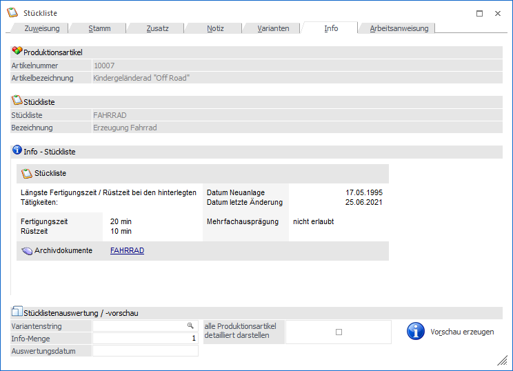
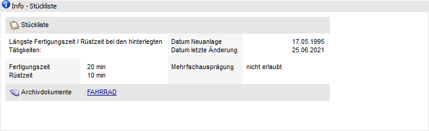
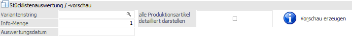

In dem Register "Info" werden zusätzliche Informationen zur Stückliste angezeigt. Außerdem kann direkt eine "Stücklistenauswertung" bzw. "-vorschau" erstellt werden.

Folgende Eingabefelder, Einstellungen und Information stehen zur Verfügung:
Produktionsartikel

Ø Artikelnummer
An dieser Stelle wird die Artikelnummer des ausgewählten Produktionsartikels angezeigt.
Ø Bezeichnung
Hier wird die Bezeichnung des aktuell gewählten Produktionsartikels dargestellt.
Stückliste

Ø Stückliste
An dieser Stelle wird die Nummer der ausgewählten Stückliste angezeigt.
Ø Bezeichnung
Hier wird die Bezeichnung der aktuell gewählten Stückliste dargestellt.
Info - Stückliste

Der Bereich "Info-Stückliste" besteht aus einem frei zu definierenden Formular (kann vom betreuenden Händler individuell angepasst werden). Standardmäßig werden folgende Informationen angezeigt:
Ø Datum Neuanlage
Hier wird das Datum angezeigt, an welchem die Stückliste angelegt wurde.
Ø Datum letzte Änderung
Hier wird das Datum angezeigt, an welchem die Stückliste zuletzt verändert wurde.
Ø Fertigungszeit
Gibt die längste Fertigungszeit aus den hinterlegten Tätigkeiten an.
Hinweis
Die Fertigungszeit der Tätigkeit ergibt sich aus der Dauer der zeitaufwendigsten Ressource.
Ø Rüstzeit
Gibt die längste Rüstzeit aus den hinterlegten Tätigkeiten an.
Hinweis
Die Rüstzeit der Tätigkeit ergibt sich aus der Dauer der zeitaufwendigsten Ressource.
Ø Archivdokumente
Durch Anklicken der Stückliste werden alle Archivdokumente zu dieser Stückliste angezeigt (sofern vorhanden).
Stücklistenauswertung / -vorschau

In diesem Bereich kann über den Button "Vorschau erzeugen" eine "Stücklistenauswertung" bzw. "-vorschau" erzeugt werden (dieses ist eine Übersicht der Stückliste mit den hinterlegten Komponenten bzw. Tätigkeiten). Mit welchen Einstellungen die Liste erzeugt werden soll, kann über die nachfolgenden Felder definiert werden:
Ø Variantenstring
An dieser Stelle kann definiert werden, mit welchen Varianteneinstellungen die Liste erzeugt werden soll.
Ø Info-Menge
In diesem Feld kann die Menge eingegeben werden, mit welcher die Vorschau berechnet werden soll. Der Standardvorschlag beträgt immer 1 Stück.
Ø Auswertungsdatum
Mit Hilfe des Auswertungsdatums erfolgt eine Kontrolle, ob die Komponenten bzw. Tätigkeiten gültig sind oder nicht.
Hinweis
In der Auswertung / Vorschau werden die Komponenten bzw. Tätigkeiten entsprechend gekennzeichnet, fließen aber weiterhin in die Endsumme mit ein. Des Weiteren beeinflusst das Datum nicht die Ausgabe des Einstandspreises oder der Lagerstände.
Ø alle Produktionsartikel detailliert darstellen
Bei aktivierter Checkbox "alle Produktionsartikel detailliert darstellen" werden bei allen Produktionsartikeln, welche in der Stückliste die Einstellung "Immer vom Lager" hinterlegt haben, die zugehörigen Unterkomponenten angezeigt.
Ø Vorschau erzeugen
Durch Drücken dieses Buttons wird die Auswertung "Stücklistenauswertung / -vorschau" gestartet. In dieser Liste werden alle Komponenten und Tätigkeiten der Stückliste aufgelöst dargestellt. D.h. sollte es sich bei den Komponenten um Produktionsartikel handeln, dann werden auch die benötigten Unterkomponenten (eingerückt) angezeigt. Für die Tätigkeiten wiederum werden die in den Tätigkeiten hinterlegten Ressourcen ausgewiesen.